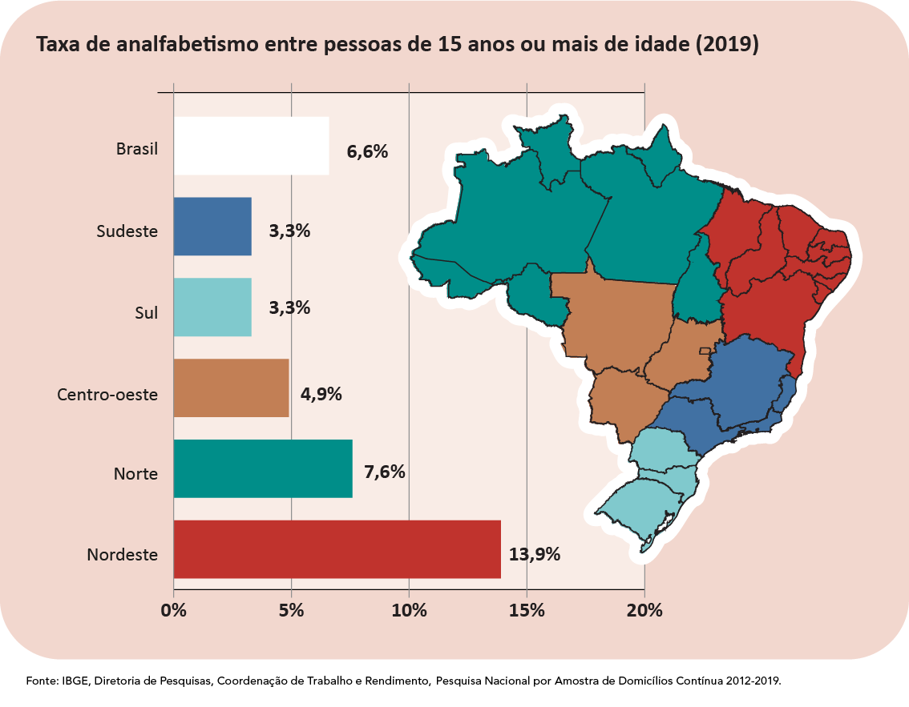
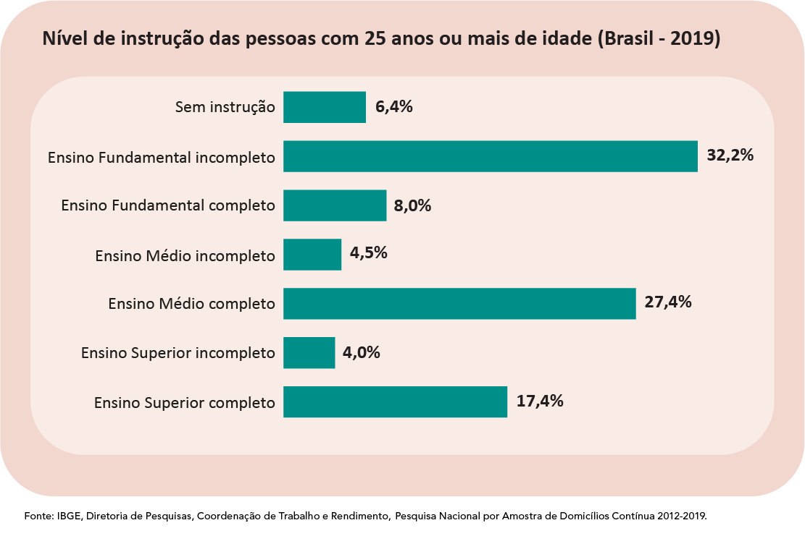

No eixo que avalia a educação,
o Brasil teve a pior avaliação entre as nações analisadas,
alcançando a 64ª posição. Entre outros fatores, o resultado nesse quesito
se explica pelo mau desempenho do país no que diz respeito aos gastos
público totais em educação. Segundo a pesquisa, quando avaliado em termos
per capita, o mundo investe em média US$ 6.873 (cerca de R$ 34,5 mil) por
estudante anualmente, enquanto o Brasil aplica apenas US$ 2.110 (R$ 10,6
aproximadamente).
Apesar desse resultado, o Brasil não investe pouco em educação, ao menos
não no que diz respeito ao Produto Interno Bruto (PIB). Um estudo da
Organização para Cooperação e Desenvolvimento Econômico (OCDE) aponta que
o país investiu uma média de 5,6% do seu PIB na área de educação, uma
porcentagem acima da média de 4,4% das nações da OCDE. No que diz respeito
ao investimento em educação no Brasil, um dos problemas está na qualidade
e na execução dos gastos.
O país teve um baixo desempenho no Pisa, a principal avaliação
internacional de desempenho escolar, ocupando a 54ª posição, e no TOEFL,
ocupando o 43º lugar no ranking. Além disso, o analfabetismo atinge 6,8%
da população acima de 15 anos, sendo a média mundial de apenas 2,6%.
Apesar de não registrar queda nos demais critérios avaliados pelo IMD
World Competitiveness Center, o Brasil também não contabilizou avanços.
Além de perder em qualidade, o país também peca na universalização da
educação. Na taxa de matrículas no ensino médio, o resultado foi 23,8%
abaixo do índice mundial. Da mesma forma, a proporção de acesso ao ensino
superior de pessoas entre 25 e 34 anos é 22,2% menor quando comparada com
o índice mundial.

No Brasil, a proporção de pessoas de 25 anos ou mais de idade que
finalizaram a educação básica obrigatória, ou seja, concluíram, no mínimo,
o ensino médio, passou de 47,4%, em 2018, para 48,8%, em 2019. Também em
2019, 46,6% da população de 25 anos ou mais de idade estava concentrada
nos níveis de instrução até o ensino fundamental completo ou equivalente;
27,4% tinham o ensino médio completo ou equivalente; e 17,4%, o superior
completo. O nível de instrução foi estimado para as pessoas de 25 anos ou
mais de idade, pois pertencem a um grupo etário que já poderia ter
concluído o seu processo regular de escolarização.

O acesso à Educação de qualidade é direito fundamental para o
desenvolvimento da cidadania e ampliação da democracia. Os investimentos
públicos em educação são de extrema importância para a redução da pobreza,
criminalidade e ampliação do crescimento econômico, bem-estar e acesso aos
direitos fundamentais pela população.